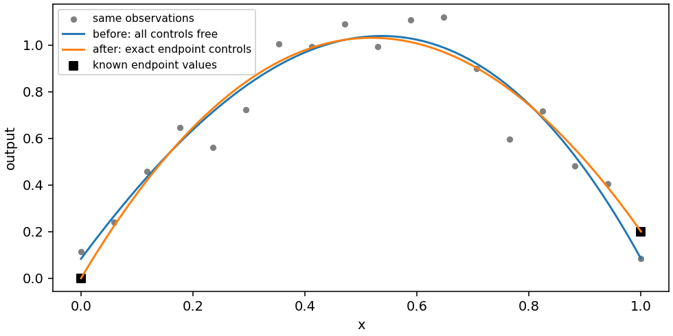

Fixed controls
When exact prior knowledge is available
Sometimes data fitting must preserve a known endpoint, a prescribed boundary,
or the value shared by several cells. A trajectory may have to start at a
specified state, or an extreme trade-off solution may already be known much
more accurately than the interior samples. Use FixedControls to impose
exact coefficient values while fitting the remaining free rows.
Increasing an observation’s weight only encourages agreement and can worsen conditioning. Ridge and smoothness encode soft preferences. A fixed control is an exact equality, enforced by eliminating that coefficient from the unknowns. Use it for actual prior knowledge; an uncertain measurement should usually remain an observation with an appropriate relative weight.
A vertex coefficient equals the model’s value at that vertex. An interior control usually is not a sampled surface value at the corresponding lattice point. Do not fix an interior row to an arbitrary measurement and expect that to impose interpolation there. General linear interpolation constraints are not provided by this mapping of coefficient rows to values.
Fit a curve with known endpoints
import torch
from torch_bsf import BezierSpace, FixedControls, Samples, fit
space = BezierSpace.simplex(1, degree=3)
x = torch.linspace(0, 1, 18, dtype=torch.float64)
t = torch.stack([1 - x, x], dim=1)
y = (torch.sin(torch.pi * x) + .2 * x + .05 * torch.cos(9 * x))[:, None]
samples = Samples(t, y)
fixed = FixedControls.from_cells(space, [
(0, (3, 0), [0.]),
(0, (0, 3), [.2]),
])
result = fit(space, samples, fixed=fixed).require_success()
endpoints = torch.tensor([[1., 0.], [0., 1.]], dtype=torch.float64)
assert torch.allclose(result.model(endpoints), torch.tensor([[0.], [.2]], dtype=torch.float64))
assert result.diagnostics.n_free_controls == 2
(3, 0) and (0, 3) are degree-three Bernstein multi-indices for the two
vertices. They are mathematical references, not assumptions about row order.
Alternatively obtain a global row with
space.control_index((3, 0), cell=0) and pass
FixedControls({row: [0.]}). Every value is an output vector whose length
must match the observation output count.


Fig. 13 Before: all four cubic controls are free. After: the same observations are fitted with both endpoints fixed, leaving two free rows. The curve passes through the known values even when noisy endpoint observations disagree. This can increase training MSE.
Reproduce the comparison with python examples/generate_guide_figures.py.
The generated metrics JSON records
both training errors. Smaller error is not the sole goal of imposing a
physical boundary condition; exact endpoint agreement is checked separately.
Tune the amount of prior information
There is no strength parameter for a fixed row. Adding fixed rows reduces the number of free controls and can stabilize a sparse-data problem, but also reduces the class of admissible functions. Start with values that are known exactly and examine the interior residuals before adding more constraints. If the fit cannot reconcile the data with its fixed boundary, check data units, index choice and domain orientation before increasing polynomial degree.
Fixing all controls skips factorization and returns status="all_fixed".
That model is fully specified by the constraints, regardless of the number of
observations. Its error can still be large. Numerical success is not evidence
that the prior values are correct. Inspect result.metrics even in an
all-fixed problem.
For a product domain, a local coefficient index contains one multi-index per
factor, for example ((2, 0), (0, 2)) on a degree (2, 2) square. For an
assembled domain, supply the builder cell handle or stable cell ID to
from_cells. Shared references resolve to a single global row. Contradictory
values for the same shared coefficient raise instead of choosing the last
assignment. Fixing a shared row affects every incident cell.
Fixing every coefficient along a boundary face prescribes its entire Bézier polynomial, not just its vertices. Fixing only the vertices leaves edge and face interior controls free at higher degree. Shared controls guarantee C0 agreement across identified faces, but these value constraints alone do not impose equal derivatives or C1 smoothness. See Single and assembled domains for topology.
Penalties, transforms and optimization
Constraints participate in data, ridge and smoothness consistently. In particular, a fixed control adjacent to a free control contributes its known value to the smoothness right-hand side. It is not deleted from the objective. A positive ridge cannot move a fixed endpoint toward zero, though it can move the remaining free controls. Compare with Regularization and numerical evidence when the prior is approximate rather than exact.
If you scale outputs explicitly, transform fixed values using the same statistics before fitting. When changing degree, resolve the multi-indices again: copying a global row number into a different space can target another coefficient. Persist the final model rather than treating a collection of row numbers as a topology-independent constraint specification.
minimize accepts the same fixed object. It sets those rows in the
optimized copy and excludes them from updates; the initial model is preserved.
Thus fixed values are constraints on the result, not requests to initialize
some rows and then let them move. See Explicit initial models and Objective minimization for
how initial guesses and optimizer tolerances serve different purposes.
Prescribe a complete quadratic edge
On a triangle, fixing an edge requires its interior coefficient as well as
its endpoints. The example sets the edge t2=0 to the scalar response
\(t_1^2\) and lets the remaining controls fit observations.
import torch
from torch_bsf import BezierSpace, Samples, FixedControls, fit
from torch_bsf.sampling import sample
space = BezierSpace.simplex(2, degree=2)
points = sample(space, 40, seed=7)
t = points.parameters
values = (t[:, 1].square() + torch.sin(t[:, 2]))[:, None]
fixed = FixedControls.from_cells(space, [
(0, (2, 0, 0), [0.]),
(0, (1, 1, 0), [0.]),
(0, (0, 2, 0), [1.]),
])
result = fit(space, Samples(points, values), fixed=fixed).require_success()
u = torch.linspace(0, 1, 31, dtype=torch.float64)
edge = torch.stack([1 - u, u, torch.zeros_like(u)], dim=1)
assert torch.allclose(result.model(edge)[:, 0], u.square(), atol=1e-12)
assert result.diagnostics.n_free_controls == 3
The zero final component selects controls lying on that triangle edge. The other three controls remain free. Testing multiple edge locations checks the whole prescribed quadratic rather than merely its endpoint values. At a different degree, the same edge polynomial needs its representation in that degree; reusing these multi-indices is invalid.
For a vector response, prescribe every output component of each fixed row. For an assembled space, resolve the local edge references through its cell handle so neighboring charts use the shared global rows. A fixed boundary can coexist with interior approximation error, which should be assessed on independent points using the original output units.